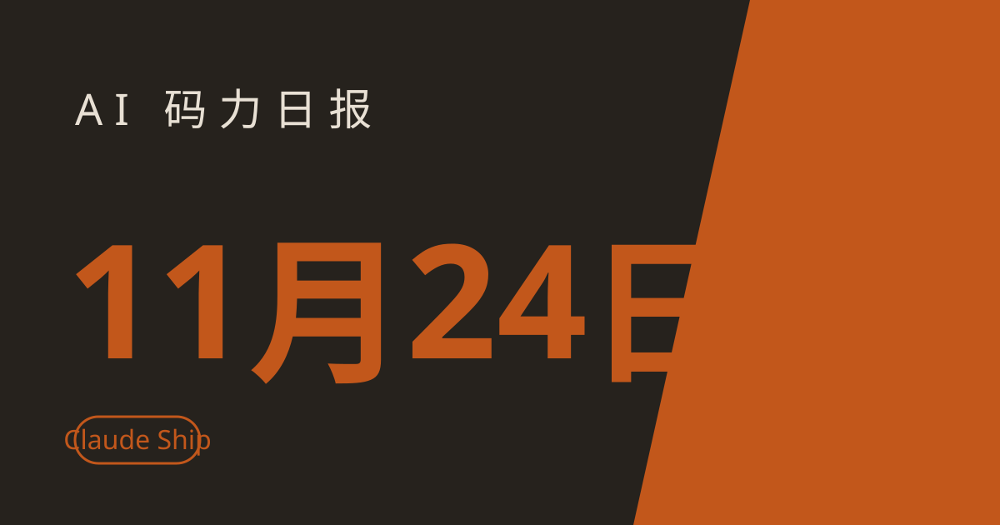

AI 码力日报 · 2026年11月24日

⚡ 一句话速览
- Anthropic 发布 Claude Ship：PR 评审、修 bug、批合并一条龙，Team/Enterprise 今日开测。
- 智谱 GLM-5.4：750B 参数循环 Transformer，自称对标 2–3T 模型，但官方跑分表还没出。
- 英伟达董事会 180 度转弯：黄仁勋复职 CEO，股价单日涨超 30%。
- Google DeepMind：Gemini 4 agent 团队用 Lean 形式化验证，把聚变模拟量子线路成本砍了 11.8 倍。
🤖 今日 AI Coding 动态
Claude Ship 来了：AI 不光写代码，PR 评审、修 bug、批合并也包了
跟你有啥关系：写代码的瓶颈早就从"写出来"挪到了"审完、修完、合进去"——Anthropic 这次直接把后半程也交给 agent 了。11 月 23 日发布的 Claude Ship 由三个 agent 组成：Code Review（已正式可用）对着整个代码库多角度审 PR，还会用对抗验证筛掉自己的误报；PR Steward（beta）专门盯着变红的 CI、合并冲突和 review 意见去修，修完还会留言说改了什么、怎么撤销，但它自己不批也不合；Claude Approvals（beta）按团队写在仓库里的审批策略文件办事，常规改动自己批，高风险的交还给人。开发者在 Claude Code 里敲 /ship 就能走完推送、开 PR、审、修的全程。Anthropic 自家数据：Claude Code 团队 6–9 月合并的 PR 翻了一倍多，回滚比例降了 40% 以上。提醒三句：只上 Team 和 Enterprise 计划、只接 GitHub 仓库；用量按 token 计费，管理员能设上限；零留存、HIPAA、客户自管密钥的组织用不了。符合条件的 Enterprise 组织在 2027 年 1 月 15 日前可领至少 1 万美元 Ship credits。我的看法：审批策略文件成了新的权力中心——写得松，机器人写的 PR 能零人工合入；这东西好不好用，第一看你们的策略文件写得有多较真。官方发布
智谱 GLM-5.4：750B 参数循环 Transformer，自称对标 2–3T 模型，跑分表却还没出
跟你有啥关系：智谱的新旗舰换了条技术路线——不堆参数，改让同一组层多跑一遍，号称 750B 参数打出 2–3T 的水平；已经在 Coding Plan 里能用，额度还涨了五成。11 月 23 日，Z.ai（智谱）发布 GLM-5.4：把 GLM-5 的 28 层拿来循环跑两遍（Loop Transformer），参数量还是约 750B，上下文 1M token，还补上了视觉能力，能看截图做可视化编码；官方称峰值 70–80 tokens/s、闲时最高 200 tokens/s。Coding Plan 用户直接能用（Claude Code 里选 glm-5.4[1m]），额度比 GLM-5.3 多 50%。但是：官方至今没公布 GLM-5.4 自己的跑分表，只有 30B 小模型的消融实验——循环结构在数学、科学推理和长上下文上提升最大，GPQA-Diamond 和 MMLU-Pro 上输出还短了 10–14%。Z.ai 自己也承认一个毛病：模型有时会陷入超长的"马拉松式思考"，不过他们说多想想反而更准。我的看法：架构想法是真的有意思（参数不涨、深度翻倍），但在独立跑分出来之前，"对标 2–3T"先当厂商说法听；API 和开源权重都还没开，现在只能订阅用。TestingCatalog 报道
黄仁勋复职了：英伟达董事会 11 天内 180 度转弯，股价单日涨超 30%
跟你有啥关系：AI 股上周刚经历血洗，周一靠这一条消息全线反弹——英伟达这出换帅大戏，比财报更能左右你的持仓和算力价格预期。英伟达 11 月 23 日宣布董事会全票通过，黄仁勋即刻复任总裁兼 CEO 兼董事；11 天前他因婚外情丑闻辞职，11 月 17 日董事长 Harvey Jones 还在财报电话会上说"不打算让他回来"。董事会这次的说法是：经过一系列会谈、并收到美国政府高层的意见后，确认黄仁勋"不构成国家安全风险"。市场反应很直接：英伟达股价单日涨超 30%，创下史上第三大单日涨幅；纳指涨 6%、标普涨 4%。特朗普发文欢迎，说董事会"做了正确决定"。提醒一句：黄仁勋 12 月还要去国会作证，这事还没彻底翻篇；复职请愿书上有 17.7 万人签名，包括马斯克——这出戏里股东、政府、董事会全下场了。TechCrunch 报道
Google DeepMind：Gemini 4 agent 团队用 Lean 证明过的量子算法，聚变模拟成本砍了 11.8 倍
跟你有啥关系：这不是"AI 写了篇论文"，而是 agent 团队第一次在有数学证明背书的前提下，把量子算法的成本砍了一个数量级——形式化验证正在变成 agent 科研的标配动作。Google DeepMind 11 月 23 日发文：多个 Gemini 4 agent 团队合作改进经典量子算法，所有结果都用 Lean 定理证明器验证过正确性与成本，代码和证明已开源。数字很炸：惯性约束聚变的量子线路计算成本降 11.8 倍（纠错量子比特从 5650 降到 4338）、光敏分子模拟便宜 8 倍、药物代谢酶 P450 模拟便宜 2.5 倍、Grover 算法提速 2.57 倍、arcsin 例程提速 290 倍。做法是：先在 Lean 里建量子程序库、把问题写成形式化规约，agent 团队各自找优化，只有通过 Lean 证明的想法才能进共享笔记本；大规模实验用的是 Gemini 4 Carbon。提醒一句：这些是未来纠错量子计算机上的资源估算，不是真机上跑出来的；但"agent 出方案、证明器当裁判"这个 workflow，本身比数字更值得看。DeepMind 官方博客
Google 搜索 AI Mode 接上钱包、硬盘和 Gemini 对话：搜"哪张卡返现最高"，按你自己的账单答
跟你有啥关系：Google 搜索的 AI Mode 开始连你的钱包、云端硬盘和 Gemini 对话记录了——搜"帮我挑张返现最高的卡"这种问题，答案会按你自己的账单来。Google 11 月 23 日宣布 Personal Intelligence 扩展：AI Mode 即日起可 opt-in 接入 Google Wallet，Drive 和 Gemini App 也在几周内跟上；此前只支持 Photos 和 Workspace（Gmail、日历）。接上 Drive 后，AI Mode 能结合你的 Docs、Sheets、PDF 回答；接 Wallet 能按你绑定的卡优化返现、旅行权益；接 Gemini App 后，你在 Gemini 里的对话、传的文件照片都会成为 AI Mode 的上下文。安全上 Google 划了线：AI Mode 只能读你的财务信息，不能"移动、管理或投资你的钱"；回答下方会出一个"个性化"图标，点开能看到它用了哪些上下文。我的看法：这是搜索从"搜全网"往"搜你的人生"跨的一步，好用和吓人就隔着一个开关——好在目前是 opt-in，开关在你手里。9to5Google 报道
OpenAI 推出 OpenWorks：每月最高 8000 美元，请本地专家帮小商户用 AI
跟你有啥关系：OpenAI 开始花钱雇"本地 AI 专家"去帮小商户用 AI 了——如果你身边有小店老板不会用 AI，这可能是他们第一次免费接触到 ChatGPT Business。OpenAI 11 月 23 日推出 OpenWorks 试点：招募一批本地 AI 专家（OpenWorks Partners），派去帮美国各地独立小商户用 AI 干活，商户一分钱不用出；OpenAI 给专家每月最高 8000 美元津贴、并提供工具和资源；参与的商户还能白拿 3 个月 ChatGPT Business。我的看法：这事对普通开发者没直接关系，但信号很清楚——OpenAI 在补"最后一公里"：模型再强，小商户不会用也白搭；这套打法要是跑通了，类似的本地服务商生态很快会扩到更多国家。CryptoBriefing 报道
Cursor 旗舰模型 Composer 2 的底座是 Kimi K2.5，国会报告建议逐步淘汰中国开源权重
跟你有啥关系：你每天用的 Cursor 旗舰模型，底座可能是中国开源模型——美国国会刚出的调查报告把这事挑明了，还建议逐步淘汰。11 月 20 日，美国众议院国土安全委员会与中国问题特别委员会发布联合调查报告：Anysphere（Cursor 背后公司）告诉委员会，计划"探索逐步淘汰中国开发的开源权重模型"；报告同时披露，Cursor 旗舰自研模型 Composer 2 的底座是月之暗面（Moonshot）的开源模型 Kimi K2.5——Cursor 在其上继续做了代码数据预训练和大规模强化学习。这个底座身份不是 Cursor 主动公布的，是独立开发者先发现、之后才被证实的。背景：SpaceX 今年 8 月以约 600 亿美元全股票收购了 Anysphere；路透还报 SpaceX 正与 Cursor 合作开发 Grok 系列模型。我的看法：对用户来说短期内什么都不会变，Composer 2 照常能用；但"你的编码模型到底站在谁的肩膀上"第一次成了合规问题——以后选模型，可能得多问一句底座是谁。VibeFix 梳理
JetBrains Kotlin 基准 2.0：Claude Code 配 Opus 5.5 全场最佳，解决率 75.3%
跟你有啥关系：JetBrains 刚更新的 Kotlin 基准里，Claude Code 配 Opus 5.5 是全场最佳——如果你在 Kotlin 项目里挑 agent，这就是目前最硬的第三方数据点。JetBrains 11 月发布的 Kotlin Benchmark 2.0：Claude Code + Opus 5.5 全套任务解决率 75.3%，每个任务成本约 0.84 美元，是参评工具里最高的。提醒一句：这是 JetBrains 自家的基准数字，评测方法和任务集由 JetBrains 定，别直接当成所有语言的通用结论；但至少说明一件事——在 JetBrains 自家地盘上，Claude Code 目前还是标杆。ShortStack Daily 汇总（11 月 23 日更新）
🔧 工具更新日志
Claude Code 2.1.330：删文件多问一句，定时任务从 7 天延到 30 天
Anthropic 11 月 20 日发布 Claude Code 2.1.330，是 11 月 16–20 日连发 5 个版本里的一站，主题是收紧安全：更多指向根目录、home 目录、顶层目录或工作目录的 rm 命令要先问你，没人能回答时直接拒绝（CI 里无人值守删目录会被直接拦下）；沙箱现在会拦截对额外临时文件夹的写入，遇到符号链接或他人所有的临时目录还会警告。好用的新东西也有两个：内置画图 mod "easel"，问一句就能画图表；定时任务和 /loop 最长从 7 天延到 30 天。企业侧：支持用 Enterprise Admin Console 登录。跟你有啥关系：天天用 Claude Code 的人升到这个版本，最直观的变化是删文件时会多问一句——别在 CI 脚本里指望它静默删目录。更新解析
💬 社区热议
HN 940 分/705 评论：黄仁勋复职，全网吵的是董事会到底在干嘛
11 月 23 日英伟达官宣复职后，HN 帖子半天冲到 940 分、705 条评论。吵的焦点不在黄仁勋本人，而在董事会的流程：11 月 12 日辞职、11 月 17 日董事长公开说"不打算让他回来"、11 月 23 日全票复职——有评论说"24 小时内开掉、几天后请回来，这套流程让人怀疑董事会到底有没有章法"；另一派认为"黄仁勋大到不能被开掉"，股东、政府、董事会全下场了。还有人翻出复职请愿书 17.7 万签名（马斯克、Tim Sweeney 都在上面）。我的看法：这事最值得看的不是八卦，是 AI 公司的治理风险已经能一日蒸发/创造几千亿美元市值——你的算力账单和持仓，都系在这类消息上。TechCrunch 报道
HN 626 分/259 评论：本地 AI 指南冲上首页，"家里有台 5090 就能当私人 ChatGPT"
Jerry James 11 月 22 日发的《本地 AI 新手指南》冲上 HN 首页：用 Unsloth Desktop + Qwen3.8-27B 或 Inkling 2 Mini，10–15 分钟在自家 Windows 电脑上搭一个私人 ChatGPT，不用终端、不用配 Python 环境、不用订阅。评论区最热的不是教程本身，而是"本地派"和"订阅派"的路线之争：本地派说数据不出家门、全家人都能用；订阅派反驳说维护模型、调量化参数的时间成本，够买好几年 Plus 了。还有人提醒：5090 跑 27B 是舒服，但 8GB 显存的老卡只能跑 9B 小模型，别照着顶配抄作业。教程本身我放下面"3 分钟小教程"了。指南原文
HN 1014 分：Cursor 旗舰模型底座是 Kimi，国会报告一出，评论区先吵"底座是谁重要吗"
这条是过去一周 HN 上关于 Cursor 最热的帖子。美国众议院报告披露 Composer 2 基于 Kimi K2.5 后，评论区吵成两派：一派认为"底座是中国开源模型"本身就是风险，Cursor 承诺逐步淘汰是对的；另一派反问——开源权重就是拿来用的，Llama、Qwen、Kimi 早进了无数美国公司的技术栈，现在才讲"出身论"，是不是晚了点。还有技术派追问：Composer 2 在 K2.5 上做的继续预训练和 RL 到底改了多少，"底座"这个词本身就模糊。我的看法：吵的其实是两个问题——供应链安全，和"开源"到底开到哪一层；短期内你的 Cursor 不会变，但以后给公司选模型，底座来源可能会进采购清单。VibeFix 梳理
Anthropic 连发两篇神经元可解释性博客：单个神经元，也许没那么不可解释
Anthropic 对齐科学团队 11 月 23 日发了"神经元基底"系列的两篇博客，挑战了一个共识：单个 MLP 神经元因为"多义性"（一个神经元对韩文、HTTP 请求、长颈鹿都放电）一直被认为不适合做可解释性的基本单位。他们的实验发现：在随机抽取的中层神经元里，对下一词预测有影响的输出方向中，只有约 1% 混合了两个不相关的概念；把输出方向搬到别的层，大多还能对相关词打出更高分。另一篇则问：不用训稀疏字典，原始神经元能不能直接做零样本安全检测、转向行为和审计微调。相关论文（arXiv 2610.24521）还发现，后期层超过一半的激活来自与单个神经元高度对齐的"神经元特征"。我的看法：这事离日常开发很远，但它关系到一个根本问题——以后我们能不能不靠黑盒猜，直接读懂模型在想什么；Anthropic 敢在这个方向上连发两篇，说明他们觉得路走通了。相关论文
Show HN 345 分/83 评论：Worker 755——这回轮到你当 LLM 的 subagent 了
HN 上最有意思的玩票：开发者 gulivan 做了个浏览器游戏《Worker 755》，把 agent 架构整个倒过来——一个真的 LLM 当你的工程经理，它有任务队列、只读工具和一个"派 subagent"的工具；而那个 subagent 就是你，坐在浏览器里的 Linux 终端前，90 秒倒计时内执行它派的活儿，干完还要写报告、等它检查、挨批、最后拿一份绩效评估。经理可以是 Claude、GPT、Gemini、DeepSeek、GLM 或 Kimi，也能接本地 Ollama。免费档注册后送一次 shift 的额度（默认 DeepSeek V4.1 Flash），也可以自带 OpenRouter key。评论区最高赞只有一句话："这游戏我以前玩过，那时候它叫 Jira。"仓库 MIT 开源，约 164 星（截至撰写时）。项目地址
🧩 AI 应用新品
Gemini Tasks 免费开放，还能替你打电话问价订位
跟你有啥关系：Google 的个人 agent Tasks（原名 Spark）不收钱了——美国用户还能让它直接给本地商家打电话问价、订位，你不用自己打。Google 11 月 17 日起把 Tasks 向美国、日本、韩国、加拿大、澳大利亚、印度的免费 Gemini 用户开放，跑在 Gemini 4 Hydrogen 上；11 月 20 日又在 Tasks 里接上了 Duplex：美国用户可以让 Gemini 直接打电话给本地商家，查营业时间、比价、问库存、订位，电话开头会声明是 AI 在打、且全程录音。同一批上线的还有 Google Pay 下单、RCS 收任务、Gmail 转发任务、用密码管理器登录第三方网站。限制不少：打电话只限美国、18 岁以上成年人、英语、只打 Google 验证过的商家；不能叫急救、不能付款、不能报卡号密码社保号；路易斯安那、印第安纳、明尼苏达、蒙大拿四州直接不提供。提醒一句：国内用户目前用不上全套，但 Tasks 本身的免费开放意味着 agent 正在从订阅品变成标配。Google Research 博客
🐑 今日羊毛
Nscale 新号送 $5：无服务器推理的免费额度
一句话：Nscale 刚上的注册福利，新账号送 $5 serverless 推理额度。
- 怎么薅：去 Nscale Console 注册新账号，$5 自动到账。Perq 汇总（11 月 23 日刚核实过）
- 有效期：注册即得（截至撰写时）
- 适合谁：想试 serverless 推理、又不想先绑卡的人
Articul8：前 1 万名早期用户送 10 亿 tokens
一句话：Articul8 的上线福利，前 1 万名早期用户各送 10 亿免费 tokens。
- 怎么薅：去 Articul8 的 Bivia 页面领上线 offer、拿 API key，先到先得，满 1 万人就没了。Perq 汇总（11 月 23 日刚核实过）
- 有效期：送完即止（截至撰写时）
- 适合谁：要大量便宜 tokens 跑实验的人；提醒一句：这是早期用户福利，名额有限，别拖
AI21 Labs 新号 $10 credits：7 天，不用绑卡
一句话：AI21 Labs 新账号送 $10 credits，7 天内用完，不用绑信用卡。
- 怎么薅：去 AI21 注册新账号、开免费试用，$10 自动到账。Perq 对比表（11 月 23 日刚核实过）
- 有效期：到账后 7 天（截至撰写时）
- 适合谁：想试 AI21 模型的人；7 天窗口不长，领了就尽快用
HeyGen Voice Turbo 免费到 11 月 30 日
一句话：HeyGen 的 Voice Turbo 免费语音模型，11 月 30 日前调用不花钱。
- 怎么薅：调 HeyGen 语音接口时把模型设为
heygen-voice-1-turbo-free，请求不扣余额。Perq 汇总（11 月 23 日刚核实过） - 有效期：截至 11 月 30 日（截至撰写时），过期不候
- 适合谁：要给视频、agent 加语音的人；只剩 6 天，抓紧
⭐ 今日 GitHub 热门项目
BaaRai/ARTEX：多 agent 自主渗透测试，证据链齐全
一句话介绍。解决什么问题：一个自托管的 LLM 驱动渗透测试平台：planner 拆目标、worker 用真工具执行，所有发现都绑着抓到的真实请求/响应当证据，而不是聊天记录里的一句"我觉得有漏洞"。⭐ 约 17.6k（截至撰写时）。适合：做安全测试、红队演练的人；提醒一句：这是进攻性安全工具，只测自己有权测的目标，仓库里的人工审批、范围限制和预算上限就是给你踩刹车用的。项目地址
Niko1221/Strata：一键在自家电脑上跑 Qwen3.8-Flash-Next
一句话介绍。解决什么问题：一个一键安装的本地推理工具：装好桌面 App 或跑 strata launch，选 Qwen3.8-Flash-Next（也有腾讯 Hy4-Flash、Qwen3.6-35B、Inkling 2 Mini），本机就起一个 OpenAI/Anthropic 兼容的 API，Claude Code、Codex、OpenCode、Hermes 都能直接连。⭐ 约 47.5k（截至撰写时）。适合：想把主力模型搬到本地、又不想折腾 llama.cpp 配置的人。项目地址
ccch1mneyyy/dsh-Go：DeepSeek Harness 装进口袋
一句话介绍。解决什么问题：DeepSeek Harness 的手机 App（Android 已发，Flutter 写成）：手机里内置 Linux 环境、免 Root 就能本机跑 DSH，也能 SSH 遥控电脑上的 DSH；对话、插件、语音输入都有，10 月 30 日还拿过 Trendshift 全语言日榜第一。⭐ 约 30.7k（截至撰写时）。适合：出门在外还想接着指挥家里电脑干活的人；提醒一句：这是社区非官方项目，跟 DeepSeek 没关系，模型请求按你自己的提供方计费。项目地址
🤗 Hugging Face 热门模型
inworld/voice-isolator：48kHz 人声分离，离线 64M、实时 58M
是什么：Inworld 开源（Apache-2.0）的 48kHz 人声分离模型 v1，两个 checkpoint：离线版 64M 参数、整段 8 秒一起看，质量最好；实时版 58M 参数、因果流式、20ms 前瞻、算法延迟 63ms。能干嘛：本地跑，pip install inworld-voice-isolation 后一条命令就能把录音里的人声和背景声分开，适合录音清理、语音数据集清洗、直播通话；减法反过来还能抽背景音。下载量/点赞数：632 点赞（截至撰写时）。适合：做播客、配音、语音数据的人；提醒一句：它只做降噪分离，不做修复——缺失的频段它补不回来，修复要等 v2。模型地址
apple/DepthPro2：单张照片或视频，逐像素算真实距离
是什么：苹果的 Depth Pro 2，单目深度估计：普通相机拍的一张照片、一段视频或实时画面，逐像素输出以米为单位的真实深度，边缘锐利、帧间稳定。能干嘛：本地用 PyTorch 跑，四个尺寸 S 24M（97MB）到 H+ 872M（3.5GB），另有一个 23.5M 的焦距估计器，照片没标焦距也能算。下载量/点赞数：281 点赞（截至撰写时）。适合：做 3D、AR、视频特效的人；提醒一句：权重是"仅限非商业科研"许可，商用项目先看清 license 再用。模型地址
🛠️ 值得一试的工具：addyosmani/agent-skills
是什么：Google Chrome 团队的 Addy Osmani 维护的一套"生产级 agent skills"：26 个 skill、10 条斜杠命令，覆盖从 /spec（先写需求）到 /plan、/build、/test、/review、/ship 的完整开发链路；每个 skill 都是一套带验证关卡的工作流（比如 TDD 强制红-绿-重构），还能按你正在干的活自动触发对应的 skill。一条命令装进 70 多种 agent：npx skills add addyosmani/agent-skills。
解决什么痛点：agent 写代码最大的问题不是不会写，是没有章法——这套东西就是把资深工程师的工作习惯（先定需求、拆小任务、测试证明、合入前 review）打包成 agent 能照着执行的流程。
免费额度：免费，MIT 协议。
verdict： 值得试——12 万 star 不是白来的，Addy Osmani 的背书加上"26 个 skill 全是可执行的流程而非空话"，是目前最省事的 agent 工作流升级方式；但提醒一句：别 26 个全装，先挑你最痛的一两个（比如 /review 或 TDD）试，skill 再多也得配你的栈才有用。项目地址
🎓 3 分钟小教程：10 分钟在家搭一个私人 ChatGPT（Unsloth Desktop + Qwen3.8-27B）
前置条件：一台带独显的 Windows 电脑；显存决定能跑多大的模型——8–12GB 跑 9–12B、16GB 跑 14–20B、24–32GB 跑 27–35B。
- 装 Unsloth Desktop：去 Unsloth 官网下载安装，免费，不用敲命令、不用配 Python 环境
- 下模型：在 Unsloth 里点 Model hub，选 Qwen3.8-27B 的 UD-Q4_K_XL（约 18GB，4-bit 量化），点下载；显存小的换 Qwen3.5-9B 或 Inkling 2 Mini（26.4B、1M 上下文，4-bit 约 17.6GB）
- 设上下文：点模型旁边的齿轮，Context size 设 128K（显存吃紧就设小点）
- （可选）全家共享：Settings → Remote & LAN → 设个远程密码 → 点 Start，家里其他设备用浏览器打开显示的地址就能聊
预期效果：10–15 分钟（不算下载时间）后，你家就有一个不用订阅、数据不出家门的私人 ChatGPT；提醒一句：主机得一直开着 Unsloth，别人才能连。指南原文
数据截至撰写时，仅供参考。